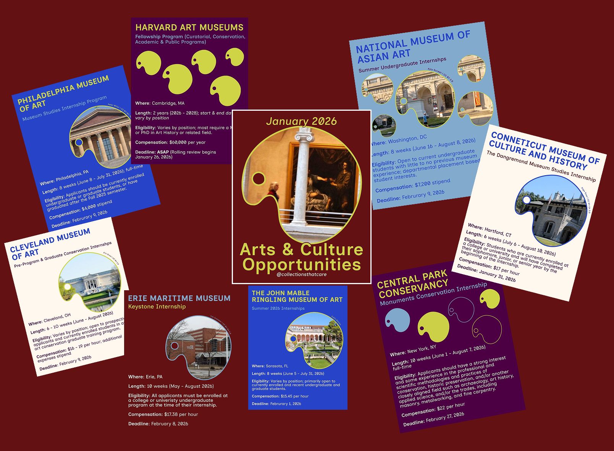
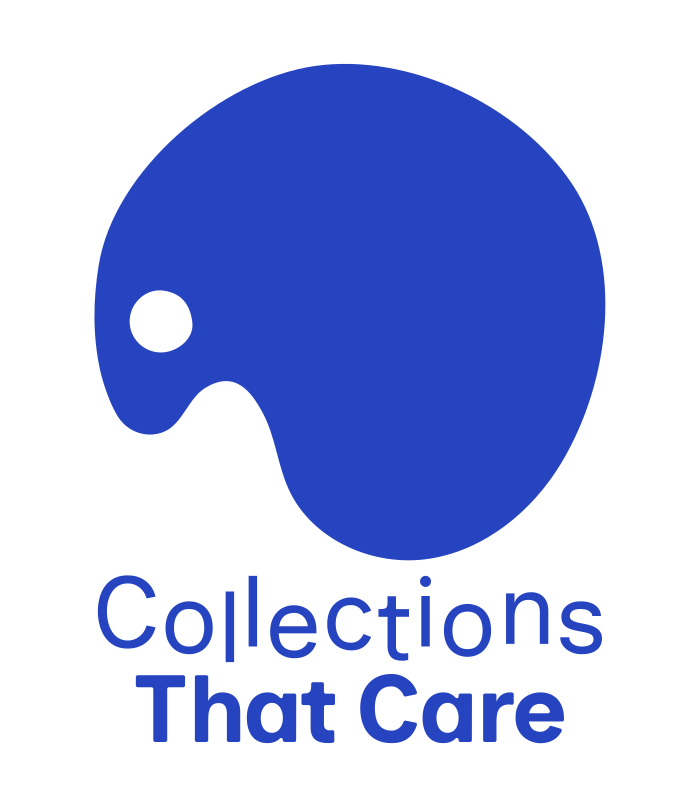
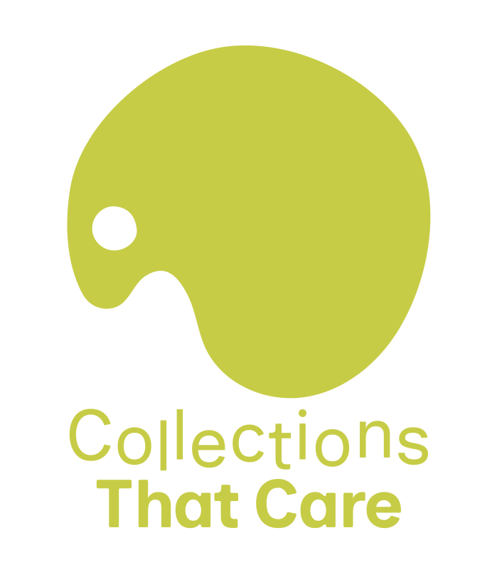
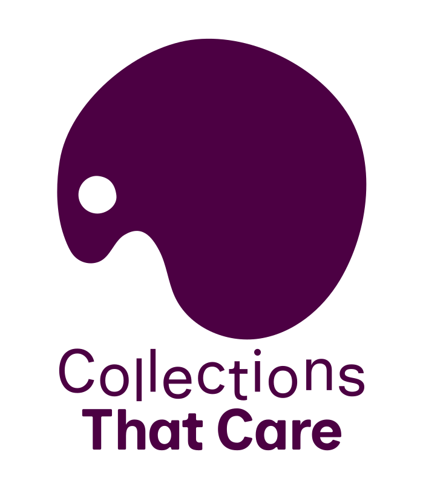
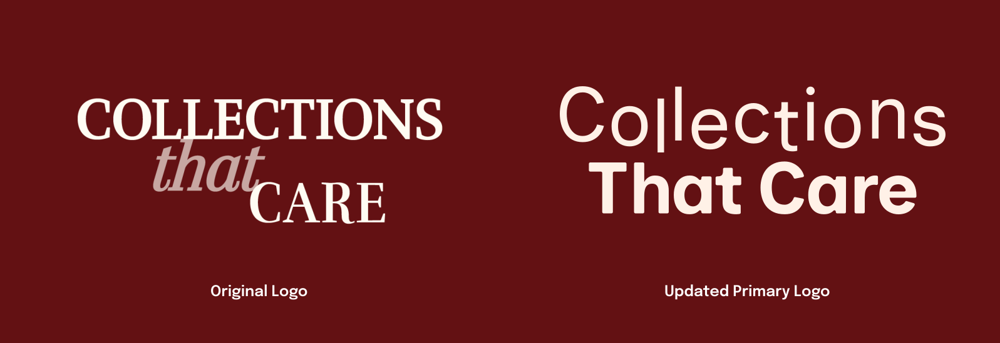
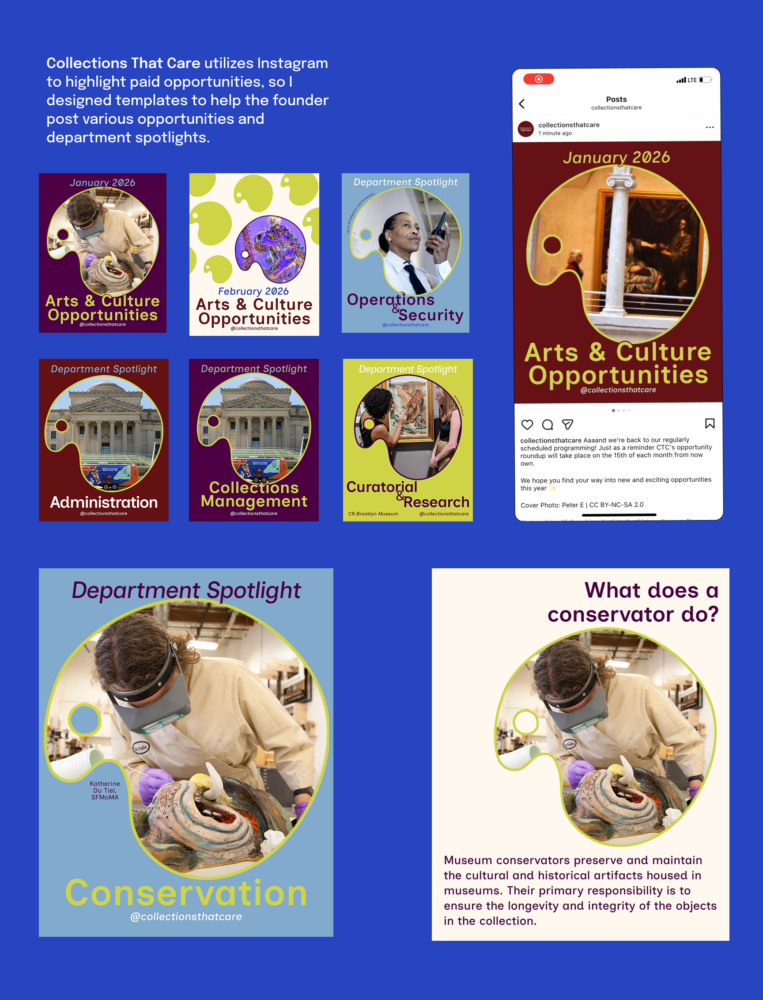

Collections That Care
IDENTITY, SOCIAL MEDIA
Collections That Care (CTC) is an online directory and job board that highlights paid opportunities within cultural institutions. Founded by my friend Pilar Forrest, who I met through a museum internship, CTC continues to bring awareness to the depth of jobs and opportunities within cultural institutions and the importance of fair compensation.
I enjoyed creating a full brand identity for this nonprofit.

Using the painter’s palette, one of the most recognizable symbols for art and creativity as the primary symbol for CTC and silhouette for job board postings aids in its inclusive branding. In addition to the use of Inclusive Sans, typeface designed by Olivia King that “puts inclusivity at the forefront.”





Modernized
Jewel
Tones
As a brand looking to the future of employment within cultural institutions, I reworked the color palette so that the original signature burgundy color was maintained in addition to deep tones with more vibrant pops of green and blue, symbolizing a harmonious combination between cultural institutions of yesterday with hopes of the future.
